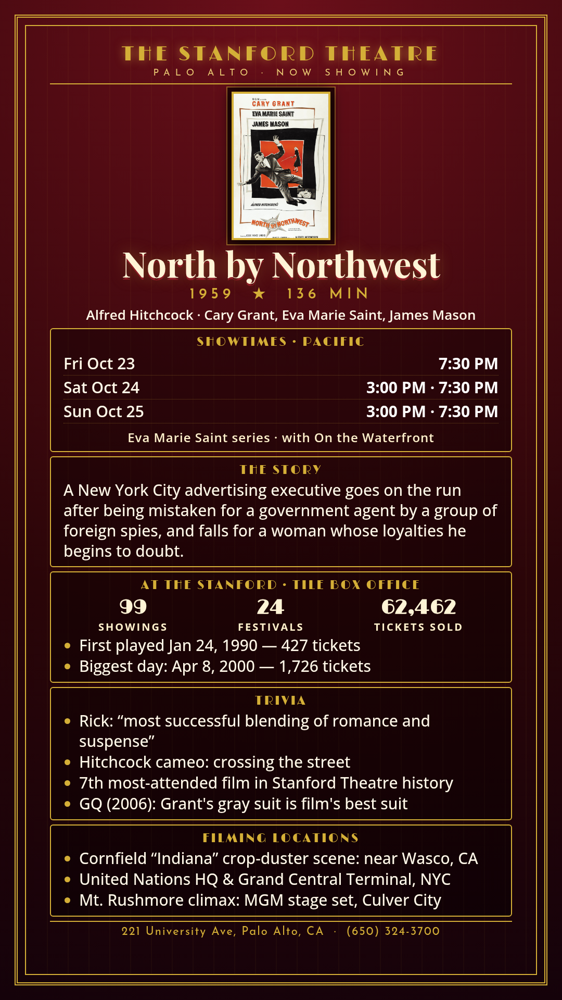

North by Northwest
Alfred Hitchcock · Cary Grant, Eva Marie Saint, James Mason
A New York City advertising executive goes on the run after being mistaken for a government agent by a group of foreign spies, and falls for a woman whose loyalties he begins to doubt.
Schedule
Remembering Eva Marie Saint · Oct 16–25, 2026
October 23–25
- North by Northwest (1959): 7:30 (plus 3:00 Sat/Sun)
- On the Waterfront (1954): 5:30, 10:00
Trivia
- Rick: “most successful blending of romance and suspense”
- Hitchcock cameo: crossing the street
- 7th most-attended film in Stanford Theatre history
- GQ (2006): Grant's gray suit is film's best suit
Filming Locations
- Cornfield “Indiana” crop-duster scene: near Wasco, CA
- United Nations HQ & Grand Central Terminal, NYC
- Mt. Rushmore climax: MGM stage set, Culver City
Previous Showings
99 Showings • 24 Festivals
62,462 tickets sold
Past runs (since '03):
- 3/2008 3,427 tickets
w/ The Trouble with Harry - 11/2009 1,730 tickets
w/ To Catch a Thief - 7/2010 1,807 tickets
w/ I'm No Angel - 7/2011 3,040 tickets
w/ Strangers on a Train - 3/2013 2,946 tickets
w/ Notorious - 2/2015 2,550 tickets
w/ The 39 Steps - 4/2016 1,896 tickets
w/ Shadow of a Doubt - 6/2018 1,933 tickets
w/ The Man Who Knew Too Much (1956) - 3/2019 1,906 tickets
w/ To Catch a Thief - 8/2022 1,547 tickets
w/ Notorious - 8/2023 2,291 tickets
w/ Charade - 5/2024 2,753 tickets
w/ To Catch a Thief - 7/2025 2,508 tickets
w/ Dial M for Murder - 4/2026 1,947 tickets
w/ The 39 Steps - 10/2026 1,059 tickets
w/ On the Waterfront
More

